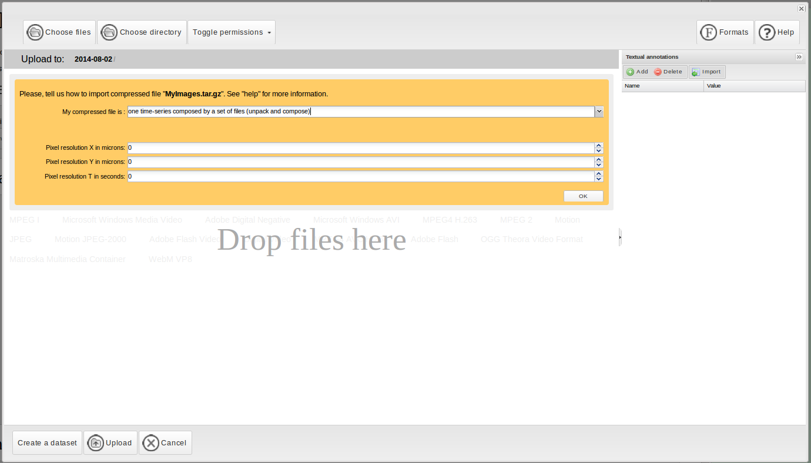
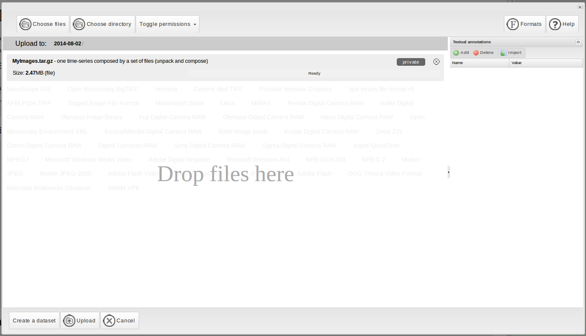

Description:
This module implements a method for the segmentation and the automated analysis of time-lapse plant images from phenotyping experiments.
A full description of this method is provided in "Minervini, M., et al., Image-based plant phenotyping with incremental learning and active contours, Ecological Informatics (2013)" .
License
By using this free and open source software you agree to reference this work and its authors in any products produced using it, including but not limited to scientific papers, posters, technical reports, presentations, leaflets, etc.
How to run the algorithm:
- Select data for processing:
- You can load images from your account or among the ones publicly available on the Bisque server.
- You can upload your own images. If you would like to run the pipeline on a time-series image:
- Click on Upload local images
- Select the compressed file (usually in .tar.gz format) contanining all the images of your time-series:

- Select the option "One time-series composed by a set of files (unpack and compose)" from the drop-down menu:

- Click on "Ok" and then the "Upload" button:

- Parameters:
- In this section you can setup all the parameters necessary to run the pipeline.
- Run Algorithm:
- Click on the "Run" button to execute the pipeline.
- Results:
- In this section you can visualize and export the results. Labelled masks have been stored to your Bisque image directory.